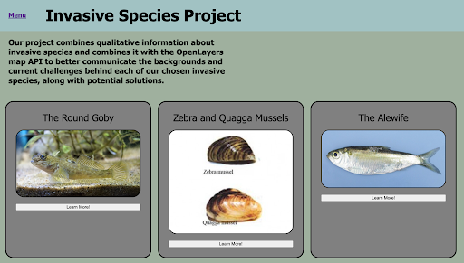

Project Lead: Kate Conkright
Past Contributions: Emma Linhart, Lilly Wu
Motivation:
Provide a space that combines qualitative informtion on the Great Lakes' most pervasive invasive species with geospatial data to better communicate the backgrounds and current challenges behind different invasive species. The invasive species site focuses on the Round Goby, Zebra and Quagga Mussels, and the Alewife and is built on crowdsourced data from reported sightings.
Methods:
The invasive species site is a HTML and CSS based website that utilizes the OpenLayers API to provide location based data. The qualitative data was based on crowdsourced reported sightings.
Check Out the Website!:
